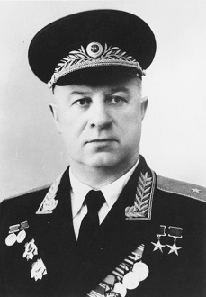

Павел Михайлович Зернов - советский военный и государственный деятель, организатор
советского атомного
проекта, первый директор
Конструкторского бюро 11- ныне
Российского федерального ядерного
центра.
Заместитель министра среднего машиностроения СССР, генерал-лейтенант инженерно-танковой службы (
1963
).
Дважды
Герой Социалистического Труда (
1949
,
1956
),
лауреат
Ленинской и дважды лауреает
Сталинской премий,
кандидат технических наук (
1937
).
Достижения во время ВОВ:
Павел Михайлович Зернов родился в
1905
году в деревне
Литвиново. С детства работал
батраком, а затем на
заводе в
Кольчугино. В
1923
году женился на
Полине Николаевой.
Зернов
получил образование в
Рабфаке, МВТУ
им. Баумана и защитил кандидатскую диссертацию по дизелям. В
1938
году он наладил
производство двигателей и
тракторов на нескольких заводах. В начале войны
Зернов за месяц организовал выпуск
крупнокалиберных
пулеметов, затем – легких танков в
Харькове, эвакуировав завод перед вступлением немцев. После этого
он
наладил выпуск танков в
Сталинграде, а в
1942
году – на
Урале, где
производство увеличилось
втрое. В
1942
году его назначили первым замнаркома танковой промышленности, а в
1943
–
зампредседателя Госплана СССР.
Зернов участвовал в восстановлении
Сталинграда, Ленинграда и других городов. С
1946
года он работал в
атомной промышленности, став соратником
И.В. Курчатова.
Зернов руководил
созданием научно-исследовательского
комплекса и предприятий в таежной глуши. За эти достижения он дважды получил звание
Героя Социалистического
Труда, две
Госпремии и
Ленинскую премию.
Вклад в ядерное оружие:
После войны с февраля
1946
г.
П.М. Зернов начинает работать в
совершенно новой отрасли науки и
промышленности –
создании атомной техники. Он становится одним из соратников руководителя работ в
этой
области –
И.В. Курчатова.
Павел Михайлович руководит созданием в таежной
глуши научно-исследовательского
комплекса, конструкторского бюро, предприятий и жилых домов для сотрудников. За достижения при выполнении
этих работ
П.М. Зернову дважды присваивалось звание
Героя Социалистического Труда,
присуждены две
Госпремии
и
Ленинская премия. Также он неоднократно награждался орденами и медалями.
В воспоминаниях рабочих:
Так же
Зернов был не только начальником, он был и наставником, умеющим помочь каждому из
сотрудников вывести
любой вопрос из лабиринта сомнений и колебаний на тот единственный путь, который приводит к цели в самое
короткое время и с наименьшей затратой сил. И недаром на всех этапах работы отчеты лабораторий и отделов
слушали у
Павла Михайловича, и каждый отчитывающийся всегда взволнованно ждал его суждения
и оценки. Он
очень серьезно относился к работам на втором заводе.
Павел Михайлович много сделал для
того, чтобы
дисциплина работы с взрывчатыми веществами была на высоком уровне. И крепко доставалось тем людям, которые
пренебрегали вопросами техники безопасности при работе с взрывчатыми веществами.
Павел Михайлович знал
способности каждого
подчиненного, учитывал его вклад в общее дело, но всегда неуклонно требовал соблюдать технику безопасности в
работе.
«Береги себя - сбережешь дело»
- эта его фраза стала крылатой среди
сотрудников.